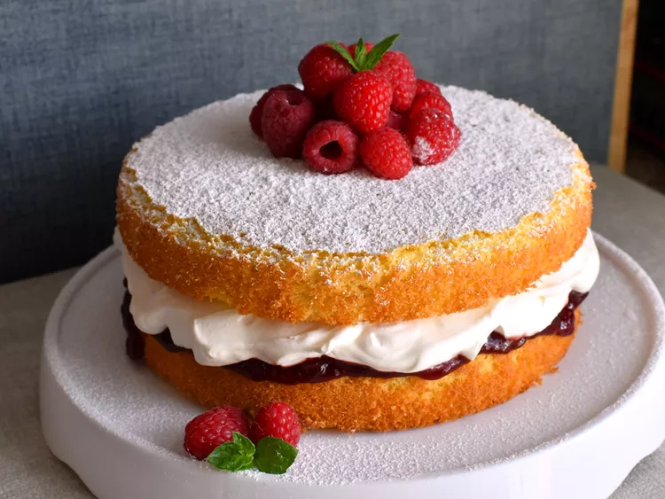

Sponge Cake

Descrição
Sobremesa britânica que consiste em geléia e creme imprensados entre duas delicadas camadas de bolo
Ingredientes
Para o bolo
spray de cozimento
farinha de trigo
fermento em pó
amido de milho
sal kosher
açúcar granulado
manteiga ou margarina
ovos
extrato de baunilha
leite integral
conservas de morango ou framboesa
Para o chantilly
creme de leite fresco
açúcar de confeiteiro
extrato de baunilha
Para enfeitar
Açúcar de confeiteiro
morangos frescos
Etapas
- Peneire os ingredientes secos em uma tigela e reserve.
- Bata a manteiga e o açúcar na batedeira e depois acrescente os ovos e a baunilha.
- Misture a mistura de farinha em velocidade baixa, alternando com o leite.
- Asse nas formas preparadas até que um palito saia limpo.
- Espalhe as conservas por cima de uma camada de bolo resfriada.
- Faça o chantilly e espalhe sobre as conservas.
- Cubra com a camada restante, polvilhe com açúcar de confeiteiro e cubra com frutas vermelhas.